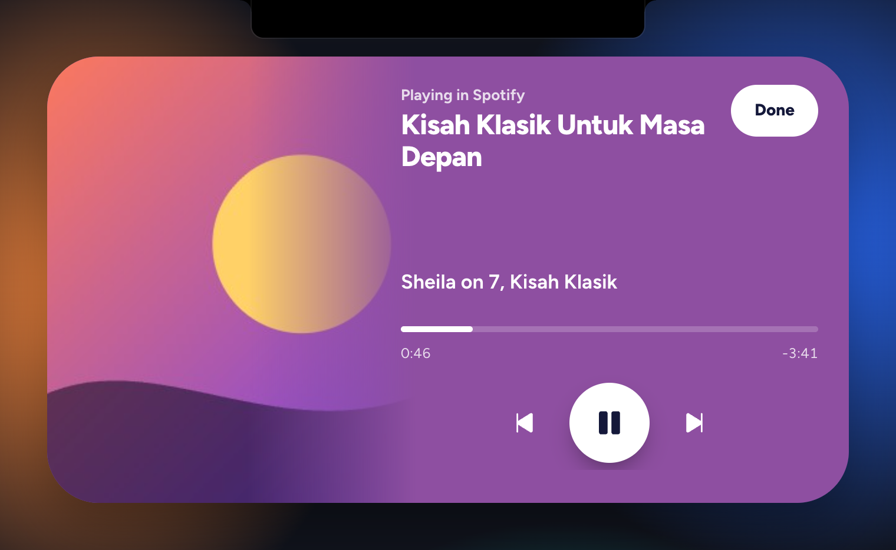
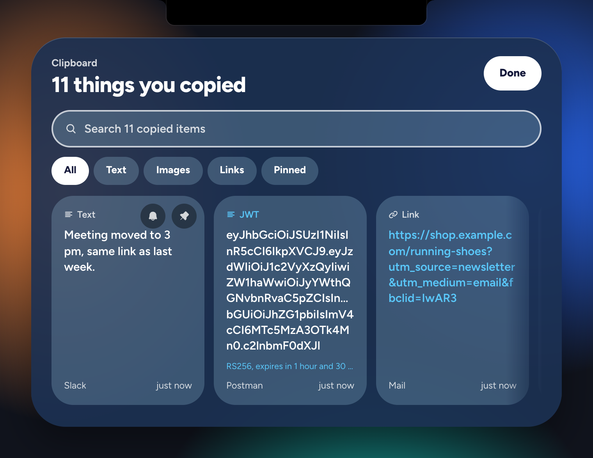
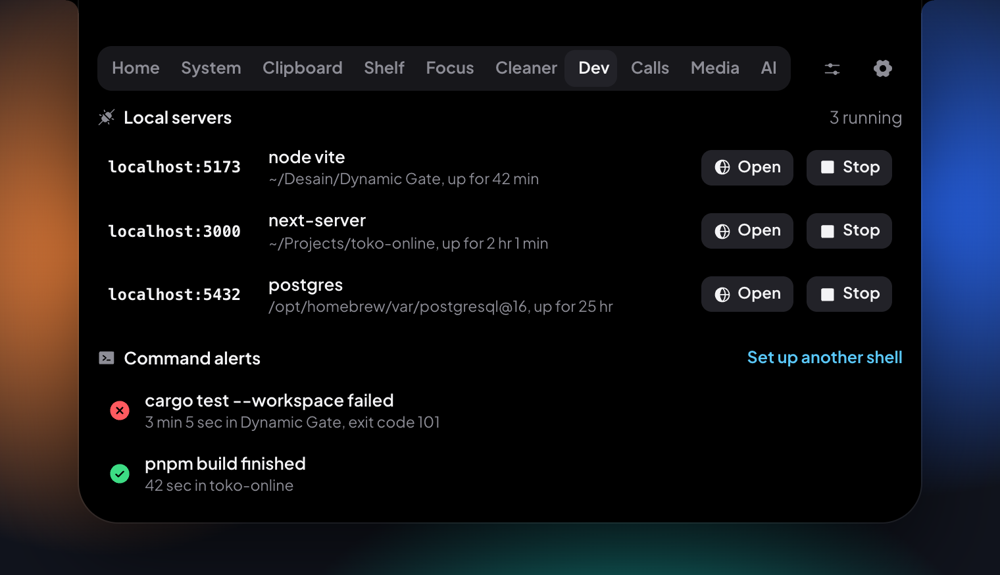
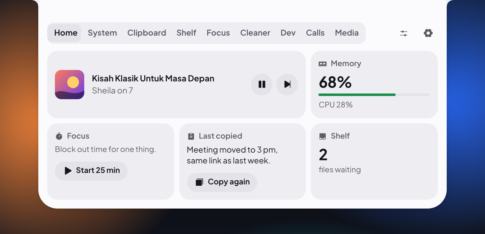

Everything at the top of your screen
Now playing
Spotify, Apple Music, YouTube, and more. Artwork, play and pause, skip, and a timeline you can drag.
Clipboard history
Text, links, code, colors, and screenshots. Search, pin, and decode JWTs, timestamps, and JSON.
Reminders from what you copy
Copy "meeting Friday at 2 pm" or "rapat Jumat jam 14.00" and it offers to remind you, in one click.
Secret guard
API keys and private keys are never written to disk and leave your clipboard after 60 seconds.
Shelf and focus
Hold files for later and drag them out anywhere, or AirDrop them. Focus sessions with a countdown in the notch.
System and cleaner
Memory pressure, CPU, and the apps using the most memory. A cleaner that only touches safe caches and logs.
For developers
See and stop local servers by port. Get told when a long terminal command finishes.
For calls
Which app has your mic, the call time, a mute button, and a camera mirror before you join.
Screenshots





Works on
| Minimum | Recommended | |
|---|---|---|
| macOS | macOS 11 Big Sur, Intel or Apple silicon | macOS 15 or newer |
| Windows | Windows 10 version 1809, 64-bit | Windows 11 |
| Linux | 64-bit with WebKitGTK 4.1 (Ubuntu 22.04, Debian 12, Fedora 37, or newer) | An X11 session |
| Memory | 4 GB RAM | 8 GB RAM |
About 1% CPU while you work and around 160 MB of memory in total. Step-by-step install help is in the install guide.
Questions
Is it really free?
Yes. Gentra Island is free and open source under the GPL-3.0. There's no paid version and nothing is locked.
Do I need a MacBook with a notch?
No. With a notch it blends into the camera housing. On other Macs, Windows, and Linux it floats as a small pill at the top of the screen.
Is it a NotchNook or Boring Notch alternative?
It covers similar ground, adds clipboard history, reminders, a system monitor, and developer and call tools, and also runs on Windows and Linux.
What about my privacy?
Everything stays on your computer. No account, analytics, or tracking. Read the Privacy Policy.
Why does my computer warn me when I first open it?
The app isn't notarized or code-signed yet. The install guide shows the one-time steps.